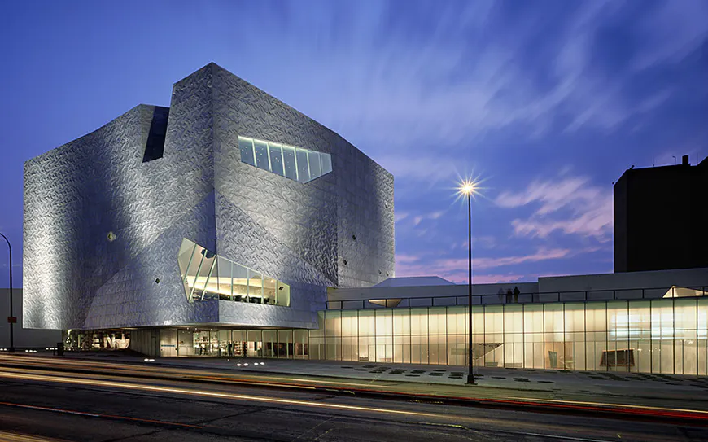
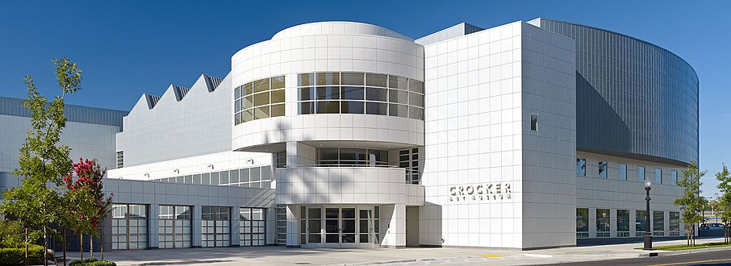
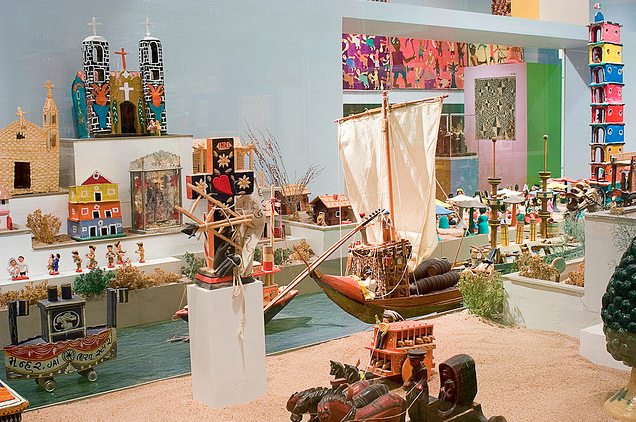
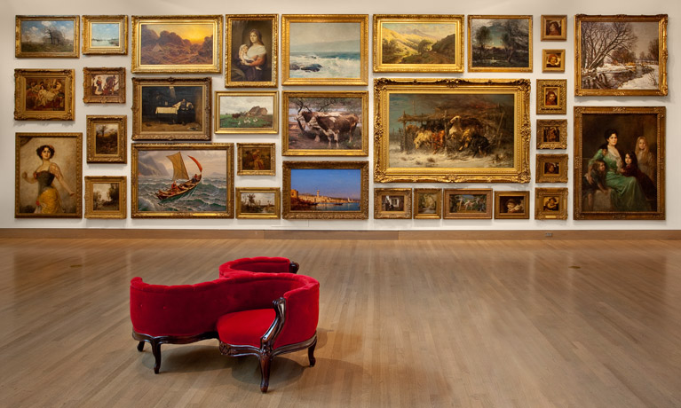
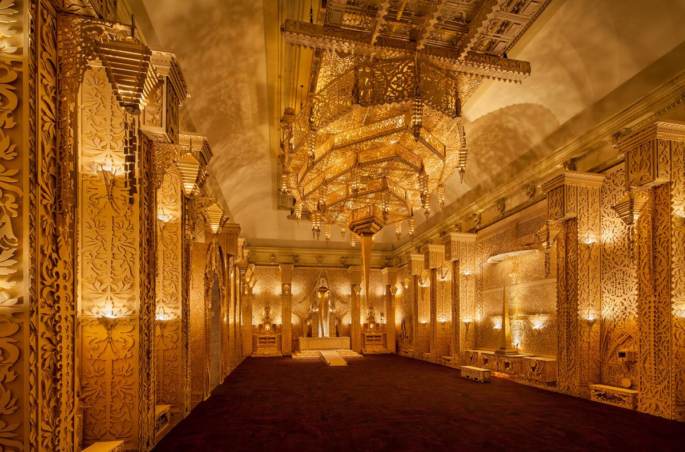

Leah Hughes
Meet Leah
Portfolio
TOP 5s
Top 5 Museum Destinations
Whenever I'm travelling, I enjoy visiting museums, particularly those that house contemporary works of art. These are a few of my favorite places I have been in my travels.

Walker Art Center - Minneapolis, MN
See for yourself!

Crocker Art Museum - Sacramento, CA
See for yourself!

Museum of International Folk Art - Santa Fe, NM
See for yourself!

Frye Art Museum - Seattle, WA
See for yourself!

Renwick Gallery - Washington DC
See for yourself!